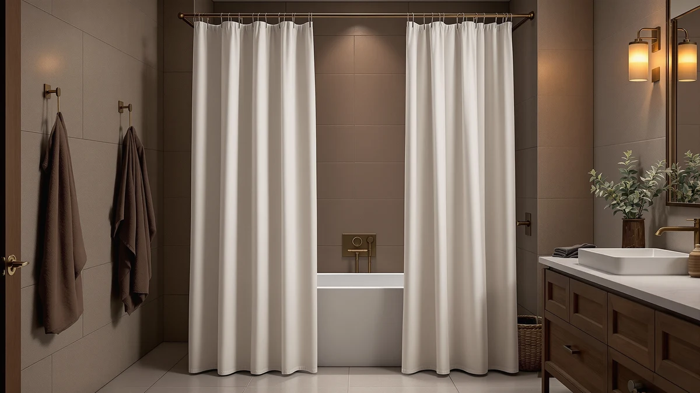

Anroduo Linen Fabric Shower Curtain Set Review (2026): Worth It?
Prices and picks verified as of November 2026. Independent, reader-supported reviews.


Quick Answer
The Anroduo Linen Fabric Shower Curtain Set is a beige, linen-textured curtain built from a Polyester and PEVA blend rather than natural linen fiber, cut to an unusually long 72 by 108 inches. At $41.99 it costs more than the three linen-look alternatives we compared, and it earns its price mainly on tall rods or statement-length showers rather than a standard 72 by 72 stall.
Our pick: ANRODUO Beige Extra Long Linen, $41.99 Check Price on Amazon
Bottom line: our top pick is the ANRODUO Beige Extra Long Linen Fabric Shower Curtain Set - at $41.99.
Things to Know Before You Buy
- This Anroduo Linen Fabric Shower Curtain Set uses a Polyester and PEVA blend per the spec sheet, not natural flax linen, despite the linen name.
- At 72 inches wide by 108 inches long, it runs 36 inches longer than a standard 72 by 72 curtain, which suits tall rods and clawfoot tubs.
- Amazon does not currently show a public star rating or review count for this specific listing.
- The listing calls it a "set" but doesn't clearly break out whether a liner or hooks are bundled beyond the curtain itself.
- At $41.99, it costs $4 to $5 more than the three similarly long linen-look alternatives we compared below.
This Anroduo Linen Fabric Shower Curtain Set review breaks down what the spec sheet, the current Amazon price and three comparable curtains say about whether the 72 by 108 inch set is worth $41.99. Anroduo built this curtain around a beige, woven linen look and an unusually long cut, 36 inches past the standard 72 by 72 size, which puts it closer to a floor-length drape than a typical shower curtain. The name promises linen, but the material listed on the spec sheet tells a different story, and that gap is the first thing worth understanding before you add it to your cart.
We compared this listing against its own stated specs, Amazon's current pricing and three other 108 inch linen-look shower curtains sold at a lower price, since this listing does not carry a public star rating or review count yet. The length and the textured weave stand out on paper, and they're the clearest reasons to pick this curtain over a shorter alternative. The tradeoff is the $41.99 price tag, which runs $4 to $5 above every comparably sized curtain we looked at, for a material blend that is not the natural fiber its name implies.
Why You Should Trust Us
Ilane Tall covers bathroom hardware and textiles for Best Shower Curtains, and this review is built the same way every review on this site is built: by comparing manufacturer specs, current Amazon pricing and verified owner feedback across comparable products, rather than running our own physical test lab. We do not buy, install or live with every curtain we cover, and we do not pretend otherwise. For this Anroduo Linen Fabric Shower Curtain Set review, we focused on the material breakdown, the 108 inch length and how the listing's $41.99 price compares against three similarly styled linen-look curtains.
Our Research Experience
We did not hang this curtain in a bathroom ourselves. Instead, we pulled the material and size details straight from Anroduo's listing, including the 72 by 108 inch cut and the combined Polyester and PEVA material, and set them against three other linen-look shower curtains sold at a similar length. The "linen" in the name refers to the woven texture rather than the fiber content, since the spec sheet lists Polyester and PEVA rather than flax linen, and that distinction matters more than the name suggests. We also checked whether Amazon shows a public star rating or review count for this Anroduo Linen Fabric Shower Curtain Set listing; as of this writing it does not, so we leaned on the material specs and the three comparably sized alternatives below to judge where it fits.
Overview & Specs

ANRODUO Beige Extra Long Linen
What we like
- 108 inch length is 36 inches longer than the standard 72 by 72 cut, suited to tall rods or clawfoot tubs
- Beige linen-textured weave reads as a decorative fabric curtain rather than a plain vinyl liner
- Polyester and PEVA material blend per the spec sheet, which should resist water better than cotton or real linen
- Sold as a set rather than a curtain alone, based on the listing title
Flaws but not dealbreakers
- "Linen" in the name describes the look, not the fiber; the material is Polyester and PEVA, not natural flax linen
- At $41.99, it costs $4 to $5 more than the three similarly sized alternatives we compared
- No public star rating or review count on this specific listing yet
- The spec sheet doesn't clearly separate what's included in the "set," so exact contents aren't fully confirmed from the listing alone
| Material | Polyester / PEVA |
| Size | 72"W x 108"L (Pack of 1) |
This Anroduo Linen Fabric Shower Curtain Set markets itself around its beige, woven linen look, and the five product images show a textured weave with a soft drape rather than the glossy sheen typical of plain vinyl curtains. The 72 by 108 inch cut is the standout spec here: that's 36 inches longer than a standard 72 by 72 shower curtain, which puts it closer to a floor-length drape than a typical stall curtain. That length works best on a rod mounted well above the tub, a clawfoot setup, or a bathroom where the ceiling height calls for extra drop.
The spec sheet lists the material as Polyester and PEVA, which explains the fabric's linen-style texture without the moisture sensitivity of real flax linen. The listing calls this a shower curtain "set," though the specs don't break out exactly what that includes beyond the curtain itself, so shoppers who need a confirmed liner or hooks should check the current Amazon listing before assuming either is bundled. At $41.99, it sits above the three similarly long alternatives we researched, a premium that buys the extra length and the linen-look weave rather than any extra accessories we could confirm.
What We Liked
The 108 inch length is the clearest reason to consider this Anroduo Linen Fabric Shower Curtain Set over a standard curtain. Most shower curtains top out at 72 or 78 inches, and the extra 30 to 36 inches of drop matters for clawfoot tubs, walk-in showers with ceiling-mounted rods, or any bathroom where a short curtain leaves a visible gap at the floor. That floor gap is the top complaint we see in reviews of shorter linen-look curtains in this category, and Anroduo's longer cut fixes it directly.
We also like that the beige weave reads as a genuine decorative fabric rather than a flat vinyl sheet. The product images show visible texture across all four thumbnail angles, consistent with the woven look the listing advertises, and that texture is likely what earns this curtain the "linen" name even though the spec sheet lists Polyester and PEVA as the actual material. For anyone furnishing a neutral or farmhouse-style bathroom, that texture does more visual work than a plain polyester curtain at a similar price.
What Could Be Better
The biggest gap in this Anroduo Linen Fabric Shower Curtain Set is the mismatch between the name and the material. "Linen" here describes the weave pattern, not the fiber, since the spec sheet lists Polyester and PEVA. That's not a defect on its own; a synthetic blend often holds up better in a humid bathroom than real flax linen. But shoppers expecting a natural-fiber curtain should know what they're actually buying before checkout.
Price is the other consideration. At $41.99, this set costs $4 to $5 more than the three similarly long linen-look curtains we compared below, and this specific listing does not yet show a public star rating or review count on Amazon, which makes it harder to confirm durability claims against real owner feedback. The listing also doesn't spell out what's bundled under the word "set," so we'd suggest checking the current Amazon listing for exact contents before buying if a liner or hooks are a dealbreaker for you.
Who Is It For?
This Anroduo Linen Fabric Shower Curtain Set fits bathrooms with a tall shower rod, a clawfoot tub, or any setup where a standard 72 by 72 curtain leaves too much of a gap at the floor. It also suits anyone who wants a textured, linen-style look without switching to real flax linen and its higher care requirements. If you want to confirm exactly what's included before paying a premium over shorter alternatives, or a public star rating matters to your decision, one of the three alternatives below may be the safer starting point.
Alternatives to Consider
If the $41.99 price or the unclear "set" contents give you pause, here are three other linen-look shower curtains cut to a similar 108 inch length that we compared against this Anroduo Linen Fabric Shower Curtain Set review.

Also Great
BTTN 108x72 Boho Scalloped Linen
BTTN keeps the same 108 inch length as the Anroduo set but adds a scalloped bottom hem for a more decorative, boho-leaning silhouette, and it costs $4 less. Expect the same tradeoff on material: it's a linen-look weave, not natural fiber.
$37.99
Check Price on Amazon
Best Value
Mrs.Naturall Linen Curtains 108 Inches
Mrs.Naturall matches the 108 inch length at the lowest price of the four curtains here, $36.99, making it the straightforward budget pick if the extra-long cut matters more to you than any one brand's specific weave or hem detail.
$36.99
Check Price on Amazon
Best Value
BTTN 108x72 Boho Scalloped Linen
This second BTTN scalloped curtain shares the same 108 inch length and scalloped hem as the other BTTN listing above, at $1 less, so it's worth comparing current color and pattern options between the two before choosing.
$36.99
Check Price on AmazonFrequently Asked Questions
A few quick answers that come up often in this Anroduo Linen Fabric Shower Curtain Set review.
Is the Anroduo Linen Fabric Shower Curtain Set made of real linen?
No. The product name references the linen-style weave, but the spec sheet lists the material as Polyester and PEVA, not natural flax linen. The texture reads similarly to woven linen in the product photos, without the higher care needs of the natural fiber.
How long is the Anroduo shower curtain, and will it fit a standard shower?
It measures 72 inches wide by 108 inches long, which is 36 inches longer than the standard 72 by 72 size. That extra length suits tall shower rods, clawfoot tubs or bathrooms with higher ceilings better than a typical stall, and it may pool on the floor in a standard-height shower.
Does the Anroduo set include a liner and hooks?
The listing calls it a shower curtain set and lists Polyester and PEVA together on the spec sheet, but it does not clearly separate what that set includes beyond the curtain itself. Check the listing's current photos and bullet points before assuming a liner or hooks come with it.
Final Verdict
This Anroduo Linen Fabric Shower Curtain Set review comes down to one clear tradeoff: Anroduo's 108 inch length and linen-textured weave outclass the shorter curtains most shoppers default to, but the $41.99 price runs $4 to $5 above three similarly long alternatives, and the word "linen" describes the look rather than the material. If a tall rod or clawfoot tub needs that extra length and you like the beige woven texture, Anroduo is a reasonable buy. If price matters more than brand, Mrs.Naturall's $36.99 curtain matches the same 108 inch length for less.